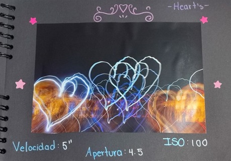
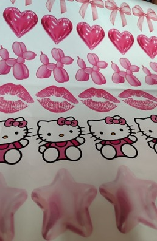
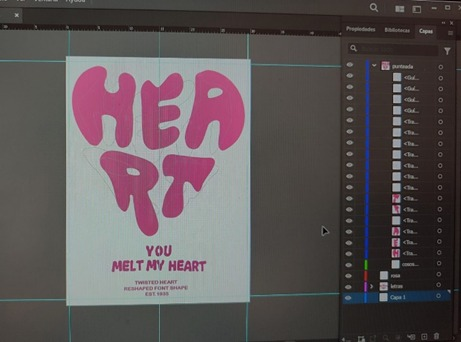
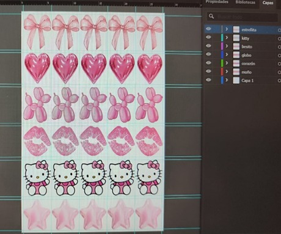
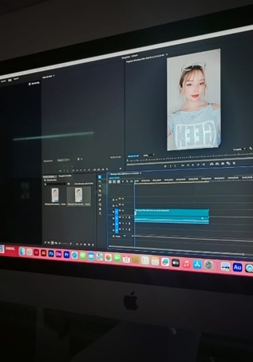
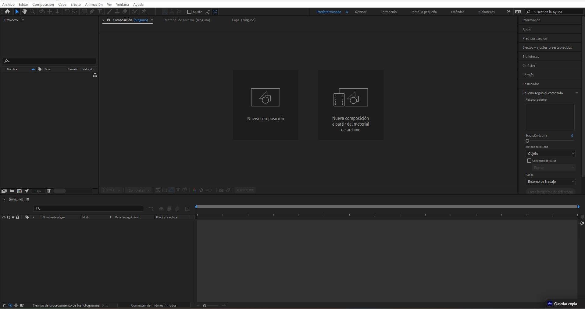
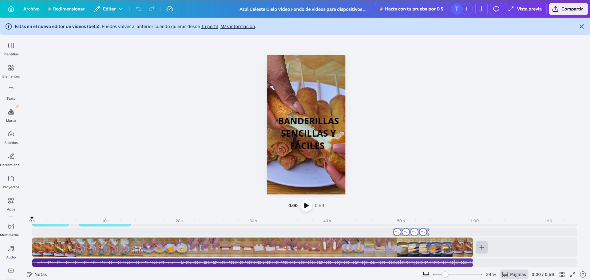

Fotografía
Actividades Realizadas
- Práctica de Light Painting (exposiciones largas).
- Manejo de luz natural y artificial.
- Elaboración de un book fotográfico (15 mejores tomas).
- Control manual: ISO, Velocidad y Apertura.
Habilidades Desarrolladas
- Control de iluminación y composición.
- Manejo técnico de cámara profesional.
- Captura de movimiento.
- Selección y curaduría de material visual para portafolio.
¿Cómo se aplican estas habilidades?
- Ajustando parámetros según el entorno.
- Planeando la toma antes de disparar.
- Seleccionando las mejores fotografías.

Evidencia: Fotografías
Evidencia: Selección del Book Fotográfico
Edición y Diseño Digital
Actividades realizadas
- Vectorización en Adobe Illustrator.
- Retoque digital en Adobe Photoshop.
- Diseño de playeras, stickers y gráficos digitales.
- Preparación de archivos para impresión.
Habilidades desarrolladas
- Vectorización profesional.
- Uso de Capas.
- Edición de color y ajustes.
- Preparación de archivos en distintos formatos.
- Adaptación de diseños para productos físicos.
¿Cómo se aplican estas habilidades?
- Transformando imágenes en vectores escalables.
- Ajustando colores y detalles para impresión.
- Diseñando productos visuales atractivos y funcionales.

Evidencia: Mockups de playeras y stickers


Evidencia: Archivos vectorizados y editados
Video Digital
Actividades realizadas
- Edición de video en Adobe Premiere Pro.
- Inserción de texto animado y efectos visuales.
- Uso de transiciones y filtros profesionales.
- Exportación en diversos formatos digitales.
Habilidades desarrolladas
- Narrativa audiovisual.
- Edición profesional básica.
- Sincronización de audio y video.
- Uso de efectos visuales.
¿Cómo se aplican estas habilidades?
- Organizando clips en línea de tiempo.
- Aplicando efectos para mejorar la calidad visual.
- Integrando texto y gráficos al video.


Evidencia: Videos de Edición

Evidencia: Edición y Video Editado